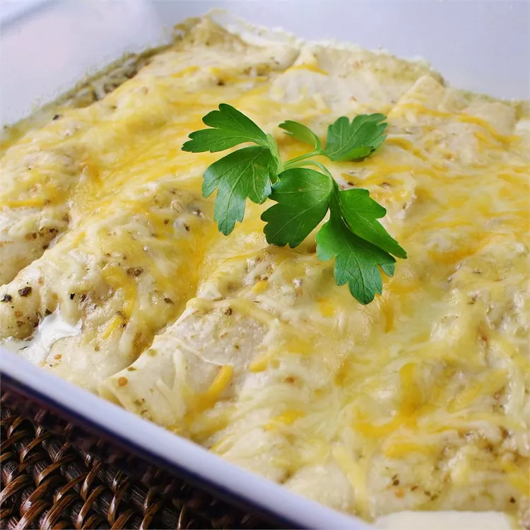

Green Enchiladas

Description
These enchiladas are a Noble family favorite.
Ingredients
- Chopped green chiles (mild) - 1 small can
- Green enchilada sauce (Las Palmas) - 1 can
- 1/2 Onion sliced
- 3-4 Chicken thighs
- 8-10 Corn tortillas (medium sized)
- Montery Jack cheese
- Olive oil
- Salt
- Pepper
Steps
-
Preheat the oven to 400 degrees. Salt and pepper the chicken thighs and
place on a baking tray. Cook in oven for 40 minutes with bones or 20
minutes without bones.
-
While the chicken is cooking, saute the green chiles and onion slices.
-
Once chicken is cooked, take out of the oven and shred the meat with a
fork.
-
Combine the sauted mixture and the shredded chicken into a big bowl and
add a little enchilada sauce.
-
Put a little olive oil on the corn tortillas (both sides) and cook in
the oven for 8-10 minutes.
-
Take the tortillas out and add a cup of meat mixture in and roll. Place
the enchiladas in a baking pan.
-
Add green sauce to the baking pan once the enchiladas are inside and top
them with cheese.
- Cook in oven with tin foil on top for 30 minutes.